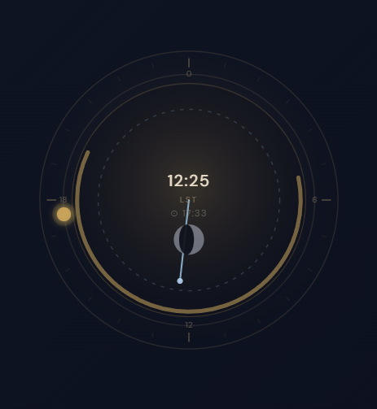

恒星时桌面仪
Sidereal Desk 是一台桌面角落的天文仪器。它实时显示地方恒星时、暮光相位、月相，由 JPL 历表驱动。不是壁纸，不是应用，而是一个始终陪伴的观测仪。

实时 SVG 恒星时刻盘，显示本地恒星时（LST）、太阳标、日照弧、月相。
GPS 或 IP 定位自动设置观测点，也支持手动输入。
面板色调随黄昏、民间暮光、海洋暮光、天文暮光实时变化。
鼠标滚轮快速调整时间，支持预设偏移和快捷键操作。
位置、设置、窗口位置自动保存，下次启动即刻恢复。
Full（完整）/ Compact（紧凑）/ Minimal（极简）三种显示模式自由切换。